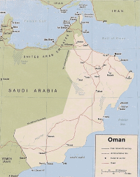

Discover Oman
A hidden gem on the southeastern coast of the Arabian Peninsula where tradition and modernity live in harmony. Oman has carefully avoided overdevelopment. The architecture of its low-rise towns retain their traditional charms and Bedouin values of hospitality. Oman's otherwordly natural beauty will enchant any traveler from spectacular mountains, wind-blown deserts to a pristine coastline.
History & Geography
Oman is a small country strategically perched on the southeastern coast of the Arabian Peninsula. It shares land borders with the United Arab Emirates to the northwest, Saudi Arabia to the west, and Yemen to the southwest, and shares marine borders with Iran and Pakistan. It has been countinuously inhabited for 106, 000 years. Don't let its small size fool you, in the mid-nineteenth century. Oman was a powerful empire streching from Zanzibar to the coast of Pakistan. Once colonized by the Portuguese, the sultante of Oman is currently the oldest independent state in the Arab World.  Oman is a country of diverse landscape, mountains, valleys, deserts, coastal plains and sea coasts. In the north, the Al Hajar Mountains reaching 9,800 ft. stretch in an arc southeastward from the rugged coastline of the Musandam Peninsula almost to Raʾs Al-Ḥadd on the extreme northeastern tip of the Arabian Peninsula. Much of the interior is desertic, hot, dry and barren. By contrast, the lush coastal regions are much more hospitable. The capital, Muscat, lies along the northern coast on the Gulf of Oman and serves as a port and commercial centre. The south of the country, Dhofar, fertile, is known for its grape and other produce. The climate in general is very hot and dry, with temperatures rising to 104°F or more in mid-summer, with the exception of the southeastern coastal area, cooled by a seasonal monsoon (khareef). Winters are mild, with lows averaging about 63°F.
Muscat
Muscat, which means “anchorage,” is strikingly beautiful, cradled between hills and the blue sea. The architecture in the historic part of the city has been carefully regulated to ensure that the skyline and the landscape are protected; air-conditioning units hidden behind wooden latticework frames. Read More...
Salalah
In Salalah, the coastal city on Oman’s Dhofar coast, there are waves and brisk bouts of wind. There’s even seasonal rain, the tail end of the Indian Ocean monsoon, known as the khareef, which waters the region’s date farms. It's a quick jaunt on a domestic Oman Air flight
Historical Forts
Oman guards the entrance to the Gulf and has had a strategically critical role in the region, which explains the hundreds of forts dotting its hilltops. The forts look out over the sparkling blue waters of the Gulf of Oman. Read More...
Whale Watching
In recent years, Oman has become one of newer hot spots for whale watching, highlighting the critically endangered Arabian humpback whale, the most isolated and only non-migratory population in the world, sperm whales, and pygmy blue whales. Read More...
Hiking in Wadi Shab in Sur
Explore the spectacular countryside beyond the capital, Muscat. Take a hike up on the dried-out river beds called wadis. You should set aside two hours each way for the excursions.
Sayq Plateau Terrace Farming
Oman has some of the most fertile and productive land in the Arabian Gulf. It is home to the widest variety of flora and fauna in the region and grows the finest dates. The mountains are full of wadis and springs that provide water to impressive cultivation terraces. Read more...
Oman's Maritime History
Mythic home of Sinbad the Sailor, who is believed to have come from Sohar, halfway between Muscat and Dubai, and for centuries the country’s prosperity was based on maritime trade from the Indies to the east coast of Africa. One of its famous exports, is authentic Omani frankincense, with its distintive spicy scent; painstakingly harvested from trees in the Dhofar region with prices starting at US$100 per kilo.
Al Alam Royal Palace
The "Flag Palace" located in Old Muscat, is the most important of the six royal residences of the ruling monarch, Sultan Qaboos of Oman. Rebuilt in 1972 Al Alam Palace is surrounded by Al Jalali and Mirani forts, both of which are unfortunately not open to the public.
Jabreen Castle
Jabreen Castle the most beautiful historic castle build in the late 17th century and is located in Bahla 108 miles away from the capital, Muscat. The castle is a rectagular building consisting of five floors and fifty-five rooms - the most beautiful and uniques of these rooms is the Sun and Moon Room.
Arabian Humpback Whale
Having only been discovered in 2007 as a genitically distinct humpback population, the critically endangered, isolated Arabian Sea humpback whale, stays in the Northern Indian Ocean, off the coast of Oman year round.
Oman's Coastline
Oman has a coastline of 1056 miles, from the Strait of Hormuz in the north to the borders of the Republic of Yemen in the southwest, overlooking three seas: the Persian Gulf, the Gulf of Oman and the Arabian Sea.
Sur
Sur, a small, charming seaside city on the east coast of Oman, is worth the detour. Located 124 miles from Muscat, Sur has a thriving, beautiful seaport and waterfront. It's the only city in Oman that has kept its shipbuilding tradition. A visit to the Dhow yard is highly recommended.
Sultan Qaboos Grand Mosque
The gorgeous Sultan Qaboos Grand Mosque in Muscat is not to be missed. Its handmade Persian rug and its Swarovski crystal chandelier were both at some point considered the largest in the world. The mosque is open to non-muslims between 8am to 11am Saturday to Thursday.
Muscat Opera
The opera house is located on Sultan Qaboos Street. The Royal Opera House reflects unique contemporary Omani architecture, and has a capacity to accommodate maximum of 1,100 people.
Mutrah Souq
Mutrah Souq, a traditional Arab market has become a shopping destination in Muscat, selling frankincense, ornamental daggers, handicrafts, silver, jewelry, and aromatic spices.
Shuwa
The cuisine is flavored with Indian and Zanzibari touches—liberal use of cardamom, saffron, turmeric, nutmeg, and clove, all vestiges of the country’s trade empire. The shuwa is Oman’s signature dish of lamb cooked in a charcoal-warmed underground pit with richly spiced rice dishes infused with cardamom, cloves, and tart black lime; vegetables simmered with coconut milk and chiles. Desserts are laced with rose water and saffron. Other Omani favorites are fresh and dried fish dishes. And for the adventurous, camel meat fried or in a spiced stew.
Wahiba Sands
Desert safari tours offer a unique overnight desert experience in Wahiba Sands. Activities include camel riding, dune-bashing in SUVs with expert drivers, and watching the sunrise and sunset from the dunes.
Musandam Peninsula
The Musandam Peninsula is a remote strategic enclave on the strait of Ormuz, separated from the rest of Oman by the east coast of the United Arab Emirates. Dubbed the "Norway of Arabia", the landscape of the peninsula is spectacular. The low-rugged Al Hagar al Garb mountains hug the coastline with rocky inlets, towering cliffs and spectacular fjords and islands, and small isolated fishing villages.

Oasis
The mountains are crossed by a number of wadis (dried-out river beds) and has several oases.
Osprey
Oman’s birdlife is extraordinarily diverse and includes such species as the osprey, glossy ibis, Egyptian vulture, Barbary falcon, and Socotra cormorant. Ospreys breed on coastal cliffs and islands. These fish-eaters are easily found near any coast of Oman.
Kingfisher
There are five species of kingfishers in Oman
Green Crab
This invasive species, native to the north-east Atlantic Ocean and Baltic Sea, can also be found in Oman.
Al Bitanah Region
Located on the coast of Gulf of Oman, Al Bitanah is the most populated region of Oman. Its capital is Sofar, the mythic home of Sinbad the Sailor.
Dhow
These traditional vessels can be found as far away as Mozambique, a vestige of ancient trade routes
Bimkah Wadi
A geological wonder, Bimkah Sinkhole, a natural crystal-clear underground pool. Great spot for an afternoon swim or a picnic. Group and private day tours can be booked online or on the ground.
Jebel Akhar
This mostly limestone mountain is the highest point in Oman and the whole of eastern Arabia with breathtaking views. At higher altitudes, it supports agriculture, giving the mountain its "green" name. It's located 93 miles from the capital, Muscat.
Sunrise
Praesent commodo cursus magna, vel scelerisque nisl consectetur.
Tanuf
The Tanuf Ruins are not ancient, but date from the late fifties when the city of Tanuf was bombed by the British RAF during the 1957 revolt over sharing the country oil wealth
Wadi Bani Khaled
Tour Wadi Bani Khalid, a picturesque mountain village, renowned for its wadis and rocky canyons, complete with massive boulders and cliffs. The turquoise pools that lie in between the canyon’s large rocks and caves have stunning view and are perfect for a long swim.
Arabian Leopard
One of the last places in which the Arabian leopard survives is the mountains in southern Oman, and the Jabal Samhan Nature Reserve has been set up to protect this critically endangered leopard subspecies.
Wadi Shab
The trek to Wadi Shab is worth it. You will be rewarded with turquoise pools, waterfalls and terraced plantations; kingfishers and pink oleander that bloom year-round by the water’s edge.
What You Need
You will need a passport that is valid at least 6 months. You can apply for the visa online or at the neareast Omani embassy or consulate. Tourist visas are limited to 30 days - the fee is currently 20 OMR.
You can get a visa upon arrival upon at airports or land crossings, except at the Oman-Yemen land borders. The visa is valid for 14 days from the date of entry. The fee is 7 OMR.
Dress Code: Please be sensitive to local customs and do not wear sleeveless shirts, halter-tops, or shorts.
When to Visit
In summer (May – September) the temperature rises to 50°C and the humidity to 95 per cent. From October to April the temperatures and humidity are bearable; the climate feels almost Mediterranean.
The best time to travel through the country is between November and February. The temperatures are between 20 and 30°C, the air is dry and clear, with only rare rainfall. But on the heights of Jabal Shams or Jabal Al-Akhdar, you may encounter snow and very cool temperatures.
South Oman, on the other hand is a favourite destination for tourists from the neighboring Gulf states from mid-May to September. During these months the monsoon, khareef, brings cooler, moister air.